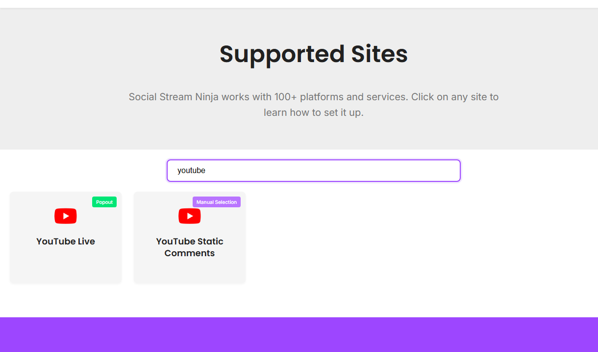

Comece por Sites compatíveis
Busque YouTube primeiro. O Social Stream separa chat ao vivo de comentários estáticos porque são usos diferentes.

Escolha o modo
| Situação | Experimente primeiro | Notas |
|---|---|---|
| Chat ao vivo normal no Chrome | Extensão do navegador / captura Standard | Abra o chat ao vivo onde a extensão consiga lê-lo. |
| Precisa de estabilidade em segundo plano ou eventos mais completos da API | Modo de fonte WebSocket/API | Escopos OAuth, permissões da conta e limites da API são importantes. |
| Precisa da sua própria cota de API | Projeto personalizado do YouTube | Use o guia de configuração do projeto YouTube. |
| Comentários estáticos de vídeos | YouTube Static Comments | Isso não é chat ao vivo. |
Configuração de chat ao vivo
- Confirme que a transmissão está ao vivo ou que o chat ao vivo está disponível.
- Abra a página de chat ao vivo do YouTube ou a página de fonte específica do modo.
- Confirme que o dock recebe mensagens antes de abrir o OBS.
- Use o mesmo ID de sessão no dock e no overlay.
Se o YouTube pedir login ou permissões, conclua no mesmo navegador ou aplicativo que faz a captura.
Notas sobre API e OAuth
- O modo API pode oferecer famílias de eventos diferentes da captura da página visível.
- Os dados de inscritos podem sofrer atraso no YouTube e incluir apenas inscrições públicas.
- Ações de escrita precisam de escopos mais amplos que a captura de chat de leitura.
- O aplicativo de desktop não compartilha automaticamente os cookies normais do Chrome.
Configuração completa: Configuração do projeto do YouTube.
Correções comuns
- Sem chat: confirme que a transmissão está ao vivo e o chat está visível.
- Funciona no Chrome, mas não no aplicativo: entre no YouTube dentro do aplicativo ou use a extensão.
- O modo API falha: confira OAuth, escopos, credenciais do projeto e cota.
- OBS em branco: teste o dock primeiro e depois a URL do overlay em um navegador normal.